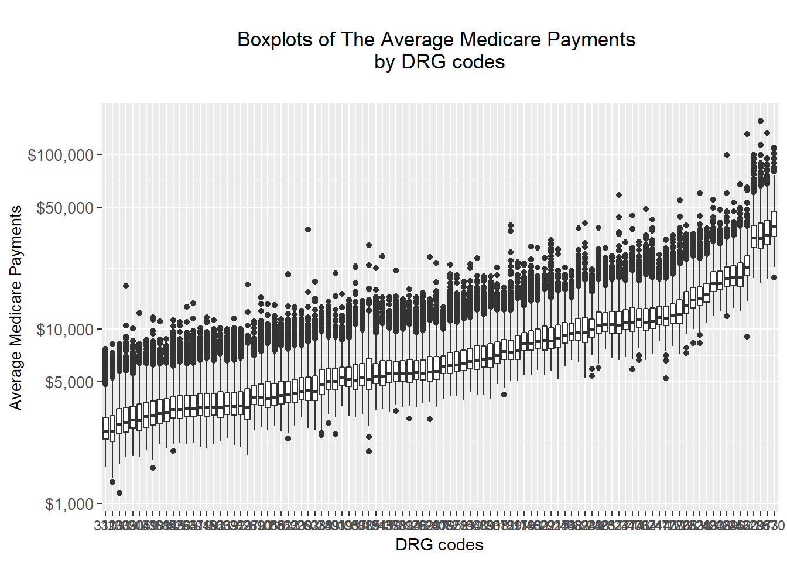

This is an R Markdown document. Markdown is a simple formatting syntax for authoring HTML, PDF, and MS Word documents. For more details on using R Markdown see http://rmarkdown.rstudio.com.
ggplot() initializes a ggplot object. It can be used to declare the input data frame for a graphic and to specify the set of plot aesthetics intended to be common throughout all subsequent layers unless specifically overridden. see https://blog.rstudio.com/2016/11/14/ggplot2-2-2-0/
ggplot(data = NULL, mapping = aes(), …, environment = parent.frame())
Arguments data: Default dataset to use for plot. If not already a data.frame, will be converted to one by fortify(). If not specified, must be supplied in each layer added to the plot.
mapping: Default list of aesthetic mappings to use for plot. If not specified, must be supplied in each layer added to the plot. … Other arguments passed on to methods. Not currently used.
environment: DEPRECATED. Used prior to tidy evaluation.
Details ggplot() is used to construct the initial plot object, and is almost always followed by + to add component to the plot. There are three common ways to invoke ggplot: ggplot(df, aes(x, y, other aesthetics)) ggplot(df) ggplot()
The first method is recommended if all layers use the same data and the same set of aesthetics, although this method can also be used to add a layer using data from another data frame. See the first example below. The second method specifies the default data frame to use for the plot, but no aesthetics are defined up front. This is useful when one data frame is used predominantly as layers are added, but the aesthetics may vary from one layer to another. The third method initializes a skeleton ggplot object which is fleshed out as layers are added. This method is useful when multiple data frames are used to produce different layers, as is often the case in complex graphics.
Examples - boxplot
Make a single plot with boxplots of the average medicare payments by DRG code.
# Load data
drg <- read.csv("data/DRG_data.csv")
# Take first three charactor from each DRG.Definition
drg.new <- drg %>%
group_by(DRG.Definition) %>%
mutate(DRG.code = strtrim(DRG.Definition,3))
# Reorder DRG codes by median of Average Medicare Payments
drg.new$DRG.code = with(drg.new, reorder(DRG.code, Average.Medicare.Payments, mean))
# install and library all the related packages
library(ggplot2)
library(purrr)
# Make a side-by-side boxplots
drg.new%>%
ggplot(aes(x = DRG.code, y = log10(Average.Medicare.Payments))) +
geom_boxplot(position = "identity")+
labs(title = "\nBoxplots of The Average Medicare Payments \nby DRG codes\n",
x = "DRG codes",
y = "Average Medicare Payments")+
# Change the format
theme(axis.title.y = element_text(size = 10, angle = 90),
axis.text.y = element_text(size = 10),
plot.title = element_text(hjust = 0.5))+
scale_y_continuous(breaks = c(3,log10(5000),4,log10(50000),5),
labels = c("$1,000","$5,000","$10,000","$50,000","$100,000"))